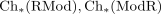
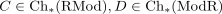
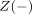
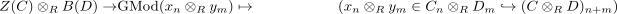
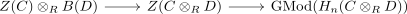
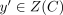
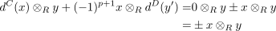

tensor with a boundary and element as boundary
1. Proposition
Let  be a ring
be a ring

the categories of chain complexes on category RMod Then for- chain complexes

- the graded module of cycles

, the graded module of boundaries
- the general tensor functor of modules resp. the tensor product of chain complexes of modules
- the canonical morphism from tensor product of cycles gives cycle of tensor product
- the chain complex of homology and the forgetful functor from chain complexes of modules to graded modules
The induced map

given by

is the zero morphism
2. Proof
for an element we may choose a preimage

and get
Thus it remains to choose the sign wisely